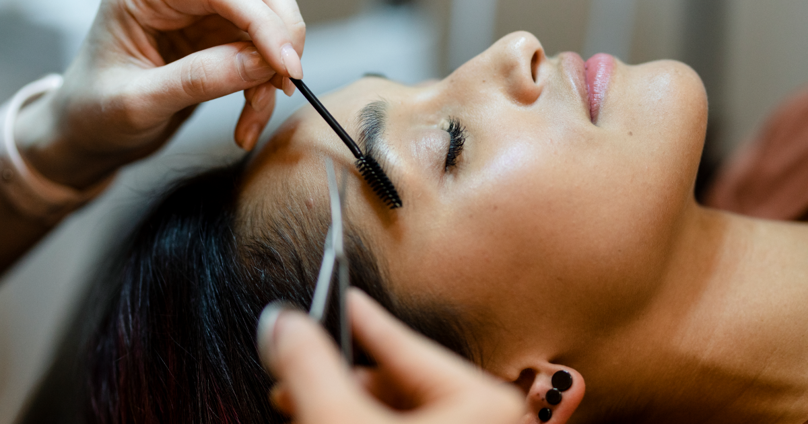
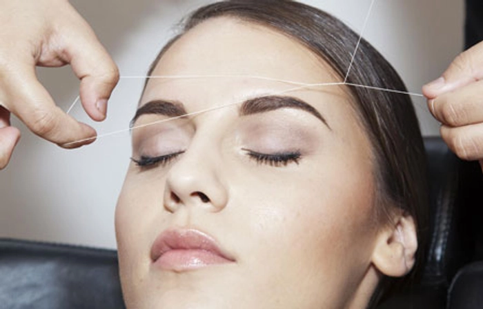
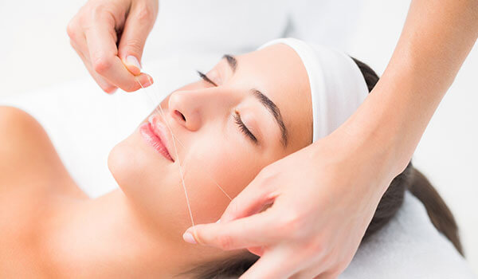

Eyebrows
This service typically involves shaping and grooming the eyebrows by removing excess hair to achieve a defined and flattering shape.
Price - Rs. 200

Forehead
Hair removal from the forehead area is often done to create a smoother appearance, especially if there is excess or unwanted hair growth.
Price - Rs. 200

Upperlips
This service focuses on removing unwanted hair from the upper lip area, usually using methods like waxing, threading, or tweezing.
Price - Rs. 100

Chin
Chin hair removal is commonly done to remove unwanted hair growth along the chin area, and it can be achieved through various methods like waxing, threading, or tweezing.
Price - Rs. 300